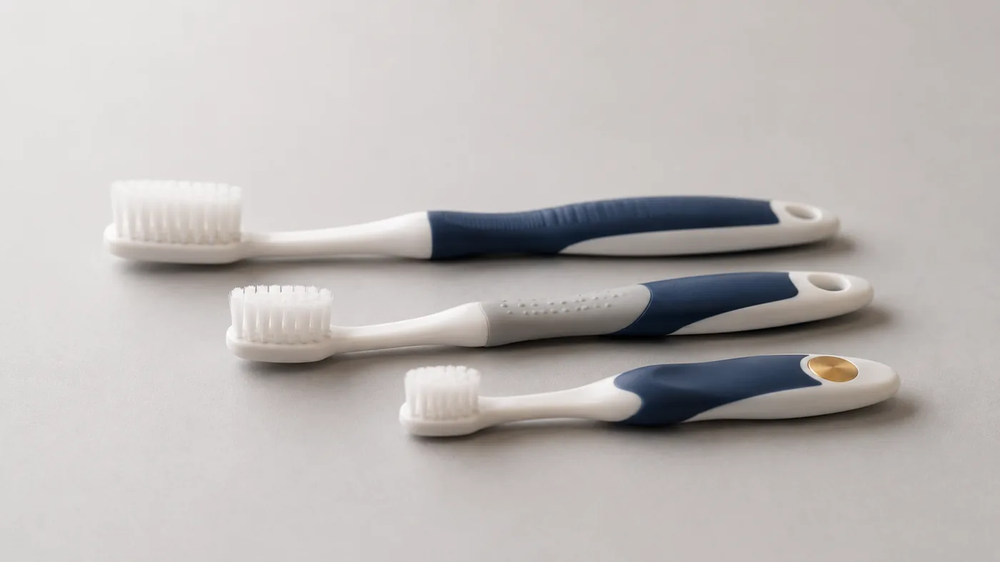
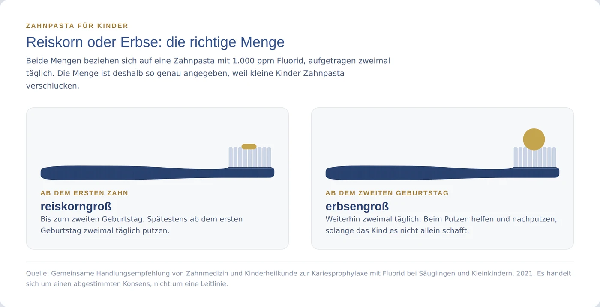
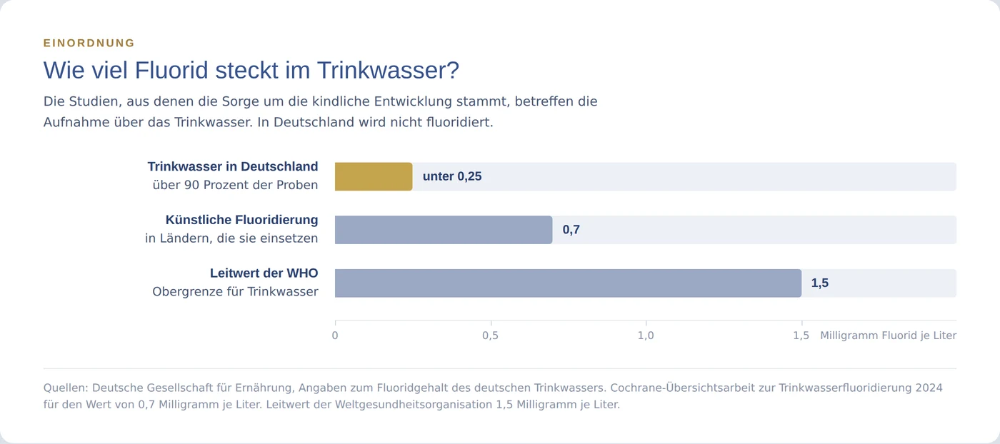

Fluorid: Schutz oder Grund zur Sorge?
Kaum ein Thema in der Zahnmedizin wird so unterschiedlich beurteilt wie Fluorid. Die einen halten es für die wirksamste Vorbeugung, die wir haben, die anderen für ein Risiko, das man vermeiden sollte. Wir gehen die häufigsten Sorgen einzeln durch und sagen jeweils, worauf sie sich stützen. Am Ende steht kein Urteil, sondern das, was Sie brauchen, um selbst zu entscheiden.
Was macht Fluorid überhaupt am Zahn?
Nach dem Essen verarbeiten Bakterien im Zahnbelag Zucker und andere Kohlenhydrate. Dabei entstehen Säuren, die Mineralien aus dem Zahnschmelz lösen. Geschieht das immer wieder, entsteht Karies.
Fluorid greift genau an dieser Stelle ein. Es lagert sich an der Zahnoberfläche an, macht den Schmelz widerstandsfähiger gegen Säure und hilft dabei, herausgelöste Mineralien wieder einzubauen.
Entscheidend ist dabei: Fluorid wirkt vor allem dort, wo es ist, also an der Zahnoberfläche. Es muss nicht geschluckt werden, um zu wirken.
Warum es fast immer um die Menge geht
Wenn Sie in diesem Beitrag nur einen Satz mitnehmen, dann diesen: Bei Fluorid entscheidet die Menge, nicht die Frage ob überhaupt.
Das klingt banal, ist aber der Schlüssel zu fast allen Streitpunkten. Die Empfehlungen arbeiten deshalb nicht mit einem Verbot, sondern mit einer Obergrenze für die Aufnahme aus allen Quellen zusammen: Zahnpasta, Speisesalz, Trinkwasser, Lebensmittel. Und die Studien, die Sorgen ausgelöst haben, betreffen ganz andere Mengen als die, um die es beim Zähneputzen geht.
Auch in die andere Richtung gilt das. Mehr Zahnpasta bedeutet nicht automatisch mehr Schutz.
Wie viel ist empfohlen, und von wem?
Für bleibende Zähne gilt in Deutschland die S3-Leitlinie „Kariesprävention bei bleibenden Zähnen", Registernummer 083-021, Stand Januar 2025, gültig bis Januar 2030. Sie empfiehlt ab dem Durchbruch der bleibenden Zähne eine Zahnpasta mit mindestens 1.000 ppm Fluorid, bei Kindern und Jugendlichen zusätzlich Fluoridlack mindestens zweimal im Jahr, bei erhöhtem Kariesrisiko viermal. Fluoridiertes Speisesalz soll als grundsätzliche Maßnahme empfohlen werden. Als Obergrenze nennt die Leitlinie eine Gesamtaufnahme von 0,05 bis 0,07 Milligramm Fluorid je Kilogramm Körpergewicht und Tag.
Was das für Ihre Tube bedeutet: Übliche Zahnpasten für Erwachsene liegen meist zwischen 1.400 und 1.500 ppm und damit deutlich über dem geforderten Mindestwert. Die Zahl steht auf der Verpackung, Sie können sie selbst nachlesen.
Für Milchzähne gibt es keine eigene aktuelle Leitlinie, sondern eine gemeinsame Handlungsempfehlung von Zahnmedizin und Kinderheilkunde aus dem Jahr 2021. Das ist ein abgestimmter Konsens, keine Leitlinie, und wir nennen ihn hier auch so.

Bei kleinen Kindern sollten die Eltern die Zahnpasta selbst auf die Bürste geben und beim Putzen helfen, solange das Kind es nicht allein schafft. Kleine Kinder können Zahnpasta noch nicht zuverlässig ausspucken, und genau deshalb sind die Mengen so genau angegeben.
„Fluorid ist ein Gift"
Das stimmt in dem Sinn, in dem es auf fast alles zutrifft: Die Menge entscheidet. Auch Kochsalz und Eisen sind in hoher Dosis giftig und in kleiner Menge lebensnotwendig oder harmlos.
Deshalb arbeitet die Leitlinie mit dem oben genannten Grenzwert statt mit einem Verbot. Er bezieht sich auf alle Quellen zusammen. Genau deshalb schauen wir bei Kindern nicht auf ein einzelnes Produkt, sondern auf die Summe.
„Fluorid schadet der Entwicklung von Kindern"
Das ist die Sorge, die in den letzten Jahren am meisten Aufmerksamkeit bekommen hat, und sie ist nicht aus der Luft gegriffen. Hier lohnt es sich, genau hinzusehen.
Das amerikanische National Toxicology Program hat 2024 eine systematische Übersichtsarbeit vorgelegt. Von 72 Studien zum Zusammenhang zwischen Fluoridaufnahme und Intelligenzquotient bei Kindern stufte es 19 als hochwertig ein; 18 davon fanden einen Zusammenhang zwischen höherer Fluoridaufnahme und niedrigerem IQ. Das Fazit lautet, mit mittlerer Sicherheit, dass eine höhere Aufnahme, etwa bei Trinkwasserwerten oberhalb des WHO-Leitwerts von 1,5 Milligramm pro Liter, mit niedrigerem IQ verbunden ist. Eine Metaanalyse derselben Arbeitsgruppe von 2025 über mehr als 70 Studien kam zum gleichen Ergebnis und fand Zusammenhänge auch unterhalb dieses Werts.
Dem steht eine andere Arbeit gegenüber. Eine Übersichtsarbeit mit Dosis-Wirkungs-Analyse von 2023 wertete 33 Studien aus und fand ebenfalls einen Zusammenhang, stellte aber fest, dass er besonders stark in den Studien mit hohem Verzerrungsrisiko auftrat, während die einzige Studie mit niedrigem Risiko keinen Effekt zeigte. Die Autoren halten fest, dass sich ein Einfluss anderer, nicht erfasster Faktoren nicht ausschließen lässt.
Was daraus folgt, ist keine Entwarnung und keine Panik, sondern eine Einordnung mit drei Punkten.
Erstens untersuchen diese Arbeiten die Aufnahme von Fluorid, gemessen im Trinkwasser oder im Urin. Keine von ihnen untersucht den Gebrauch von Zahnpasta.
Zweitens stammen die Daten überwiegend aus Regionen mit natürlich hohen Fluoridwerten im Grundwasser, wie sie in Teilen Chinas, Indiens, Mexikos und des Iran vorkommen.
Drittens, und das wissen die wenigsten: In Deutschland wird das Trinkwasser nicht fluoridiert. Mehr als 90 Prozent des deutschen Trinkwassers enthalten weniger als 0,25 Milligramm Fluorid pro Liter. Der Wert, um den in diesen Studien gestritten wird, liegt um ein Vielfaches darüber. Die Debatte, die aus den USA zu uns herüberschwappt, dreht sich um eine Maßnahme, die es hier gar nicht gibt.

„Fluorid macht weiße Flecken auf den Zähnen"
Das kann stimmen, und es ist der klarste Beleg dafür, dass es wirklich auf die Menge ankommt.
Dentale Fluorose entsteht, wenn während der Zahnbildung dauerhaft zu viel Fluorid aufgenommen wird. Sie zeigt sich als feine weiße Linien oder Flecken im Schmelz. Wichtig ist der Zeitpunkt: Fluorose kann nur entstehen, solange die Zähne im Kiefer gebildet werden, also im Kindesalter. Bei fertig durchgebrochenen Zähnen ist sie nicht mehr möglich.
In Ländern mit fluoridiertem Trinkwasser ist sie messbar. Eine Cochrane-Übersichtsarbeit von 2024 gibt bei einem Wassergehalt von 0,7 Milligramm pro Liter an, dass etwa 12 Prozent der Untersuchten eine Fluorose von ästhetischer Bedeutung hatten und etwa 40 Prozent eine Fluorose irgendeines Grades, beides bei niedriger Sicherheit der Evidenz. In Deutschland ist die hauptsächliche Quelle bei Kleinkindern verschluckte Zahnpasta. Genau darum geht es bei der Reiskorn- und der Erbsenmenge.
„Wenn Fluorid nur äußerlich wirkt, warum dann ins Wasser?"
Eine berechtigte Frage, und die Studienlage gibt ihr teilweise recht.
Dieselbe Cochrane-Übersichtsarbeit von 2024 hat Studien aus der Zeit nach 1975 gesondert betrachtet, also aus der Zeit, seit fluoridhaltige Zahnpasta verbreitet ist. Der zusätzliche Nutzen der Trinkwasserfluoridierung fiel dort deutlich kleiner aus als in den alten Untersuchungen, im Bereich von etwa einem Viertel Zahn, bei niedriger Sicherheit der Evidenz. Anders gesagt: Seit fast alle mit Fluoridzahnpasta putzen, bringt das Fluorid im Wasser rechnerisch nur noch wenig dazu.
Für Deutschland ist die Frage ohnehin theoretisch. Hier wird nicht fluoridiert, sondern auf Zahnpasta und auf freiwillig gekauftes fluoridiertes Speisesalz gesetzt, das 310 Milligramm Fluorid je Kilogramm enthält.
Und wie gut ist der Nutzen belegt?
Deutlich besser als die Risiken. Eine Cochrane-Übersichtsarbeit von 2019 hat 96 randomisierte Studien ausgewertet. Bei Kindern und Jugendlichen senkt Zahnpasta mit 1.000 bis 1.250 ppm Fluorid den Kariesbefall gegenüber fluoridfreier Zahnpasta, die Sicherheit der Evidenz ist hier hoch bis mittel. Auch bei Erwachsenen zeigte sich ein Vorteil.
Zwischen den Konzentrationen gibt es einen leichten Dosis-Wirkungs-Effekt: Mehr Fluorid schützt etwas besser. Bei kleinen Kindern muss dieser kleine Vorteil aber gegen das Fluoroserisiko abgewogen werden. Auch hier landen wir also wieder bei der Menge, und genau diese Abwägung steckt in den Empfehlungen.
Was ist von Hydroxylapatit und Xylit zu halten?
Beides wird als Alternative angeboten, und beides ist untersucht. Aber die Beleglage unterscheidet sich von der für Fluorid, und das gehört dazugesagt.
Hydroxylapatit ist der Mineralstoff, aus dem Zahnschmelz überwiegend besteht. Zwei doppelblinde randomisierte Studien haben fluoridfreie Hydroxylapatit-Zahnpasta gegen Fluoridzahnpasta geprüft, eine an 207 Kindern über ein Jahr, eine an 189 Erwachsenen über 18 Monate. Beide kamen zu dem Ergebnis, dass die Hydroxylapatit-Zahnpasta der Fluoridzahnpasta nicht unterlegen war.
Dazu drei Hinweise, die wir für wichtig halten. An beiden Studien waren Mitarbeiterinnen und Mitarbeiter eines Herstellers von Hydroxylapatit-Zahnpasta als Autoren beteiligt. Beide waren als Nichtunterlegenheitsstudien angelegt, mit einer recht großzügig gesetzten Grenze. Und die deutsche S3-Leitlinie empfiehlt Hydroxylapatit nicht. Das macht die Studien nicht wertlos, aber es ist ein anderer Beleggrad als 96 Studien über sieben Jahrzehnte.
Xylit ist ein Zuckeraustauschstoff. Eine Cochrane-Übersichtsarbeit von 2015 mit zehn Studien und 5.903 Teilnehmenden fand, dass eine Fluoridzahnpasta mit 10 Prozent Xylit den Kariesbefall gegenüber einer reinen Fluoridzahnpasta um etwa 13 Prozent senkte, bei niedriger Qualität der Evidenz und aus Studien derselben Arbeitsgruppe in derselben Bevölkerung. Für die übrigen Anwendungsformen reichte die Evidenz nicht aus. Eine Übersichtsarbeit von 2024 bestätigt einen Effekt gegenüber keiner Behandlung, weist aber darauf hin, dass 80 Prozent der eingeschlossenen Studien ein mittleres bis hohes Verzerrungsrisiko hatten.
Der Punkt, der dabei oft untergeht: In der belastbarsten Untersuchung war Xylit eine Ergänzung zu Fluorid, kein Ersatz dafür.
Wenn Sie kein Fluorid möchten
Dann sagen Sie es uns, und wir arbeiten damit. Sie müssen sich bei uns nicht rechtfertigen und Sie werden nicht überredet.
Was wir dann anbieten: engmaschigere Kontrollen, weil ohne Fluorid früher erkannt werden muss; Versiegelung der Kaugrübchen, die ohne Fluorid auskommt; professionelle Zahnreinigung in kürzeren Abständen; ein sehr genauer Blick auf Zucker, besonders auf Getränke und auf die Häufigkeit statt auf die Menge; Hydroxylapatit-Zahnpasta, wenn Sie eine Alternative möchten; und bei Kindern eine ehrliche Einschätzung des individuellen Risikos, statt einer pauschalen Empfehlung in die eine oder andere Richtung.
Was wir nicht tun: so tun, als wäre das gleichwertig. Der Verzicht auf Fluorid bedeutet, auf die am besten belegte Vorbeugung zu verzichten, und verlangt dafür mehr Aufwand an anderer Stelle. Das ist Ihre Entscheidung, und sie ist zu respektieren. Wir sagen Ihnen nur, was sie bedeutet.
Quellen anzeigen
Wenn Sie Fluorid nutzen möchten, kommt es vor allem auf zwei Dinge an: regelmäßig putzen und bei Kindern die Menge einhalten. Wenn Sie es nicht möchten, kommt es auf andere Dinge an, und wir zeigen Ihnen, auf welche. Was wir Ihnen nicht abnehmen können, ist die Entscheidung. Was wir Ihnen abnehmen können, ist die Suche nach verlässlichen Angaben. Sprechen Sie uns an, ohne Ihre Sorgen kleinzureden und ohne Sie in eine Richtung zu drängen. Dieser Beitrag informiert allgemein und ersetzt weder die Untersuchung noch das persönliche Gespräch.

Ablauf, Empfehlungen und Kosten, ausführlich im Infoportal.
Zur PZR im InfoportalVoraussetzungen, Ablauf, Kosten und die Pflege danach.
Zur Zahnaufhellung im InfoportalAlle Praxisnachrichten, Urlaubs- und Vertretungszeiten sowie ausführliche Informationen zu Behandlungen und Vorsorge, ständig gepflegt und in mehreren Sprachen.
Sprechzeiten
Außerhalb der Sprechzeiten: zahnärztlicher Notdienst 01801 116 116
Kontakt
Sie möchten einen Termin vereinbaren oder uns etwas mitteilen? Nutzen Sie ganz einfach unser Kontaktformular, oder noch einfacher: buchen Sie direkt online.